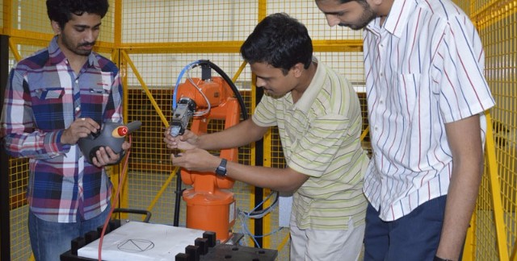
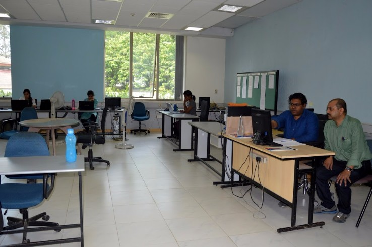

Integrated MTech
The iM.Tech course curriculum consists of Core Courses and Electives spanning ten semesters.
While the same set of core courses have to be completed by all the students every semester, the students are free to choose their electives. While core courses help in creating a strong foundation in the Information Technology field, electives allow students to learn and specialize in their own areas of interest.
The core courses, categorized into Computer Science, Electronics and Communication, Basic Sciences and Miscellaneous entirely make up the first five semesters. Electives are also categorized into Computer Science, Electronics & Communication, Data Science, Networks & Communication along with other core courses, are taken up from sixth semester till the ninth semster
Though the electives of students may vary as per their interests, the number of electives per semester remains the same. The current(ninth) semester requires students to take any two electives and a twelve credit Project under the supervision of a Professor in the college. During the tenth semester, a student can either take up an industry internship or academic research at the institute leading to a thesis.
Computer Science
Core Courses
- Programming - 1 ( Python and C )
- Data Structures and Algorithms
- Discrete Mathematics
- Programming - 2 ( C++ and Java )
- Data Structures and Algorithms
- Design and Analysis of Algorithms
- Operating Systems
- Database Systems
- Software Engineering
- Programming Languages
Specialization Electives
- Introduction to Automata Theory and Computability
- Distributed Computing
- Artificial Intelligence
- Approximation Algorithms
- Advanced Algorithms
- Convex Optimization
- Foundations of Cryptography
- Computing on Private Data
- Computer Graphics
- Advanced Computer Graphics
- Computational Geometry
- Digital Image Processing
- Advanced Digital Image Processing
- Multi Agent Systems
- Automated Formal Verification
- Object Oriented Analysis and Design(Software Engineering)
- Design Patterns and Enterprise System Development(Software Engineering)
Data Science
Specialization Electives
- Data Modeling
- Foundations for Big Data Algorithms
- Machine Learning - I
- Machine Learning - II
- Data Analytics
- Machine Perception
- Advanced Machine Perception
- Network Sciences for the Web
- Multi Agent Systems
- Data Visualization
- Geographical Information Systems
- Automated Speech Recognition
Electronics and Communication
Core Courses
- Basic Electronics, Digital Logic and Circuits
- Signals & Systems
- Computer Networks
- Computer Architecture and Organisation
- Digital Signal Processing
- Digital Communication
Specialization Electives
- Real Time Operating Systems
- Modern Operating Systems
- Inter Device Communication
- Internet of Things
- Machine Perception
- Advanced Machine Perception
- Analysis and Design of VLSI Sub Systems
- Hardware Software Co-Synthesis
- Testing and Design for Testability
Networks and Communication
Specialization Electives
- Wireless Area Networks
- Internet Of Things
- Network Security
- Techno-Economics of Networks
- IMS
- Software Defined Networkings
- Mathematical Analysis of Networks
Basic Science
Core Courses
- Physics - I
- Physics - II
- Intro to Bio-Sciences / Chemistry
- Mathematics - I ( Calculus )
- Mathematics - II ( Differential Equations )
- Mathematics - III ( Statistics, Probability
and Complex Analysis ) - Mathematics - IV ( Linear Algebra )
Miscellaneous
Core Courses
- English I
- Macro Economics / English II
- The City: The Cradle of Information
Exchange and Innovation - The History of Ideas
- Introduction to Profession
- Technical Communication
Web Sciences Lab

The Web Science Lab (WSL) at IIIT Bangalore focuses on building models to extract semantics and understand the impact of the web on different facets of human life.
Typical research pursuits of WSL include the following:
- Mining semantic associations from text and social media data
- Building computational models for various socio-cognitive phenomena on the web (like formation of collective opinions, creation of celebrities, etc.)
- Semantic integration of formal web data
Computational Sciences Lab
The Computational Sciences Lab at IIIT-B is interested broadly in the areas of Algorithms, Optimization, and Robotics.
Major focus areas include:
- Robust optimization under uncertainty, with applications to supply chains, real time search, banking, smart grid, transportation, gaming and allied areas
- Approximation algorims, machine learning, cryptography and linguistics, Visualization (scientific and information), high performance computing, computational geometry and topology
- Electronic Design Automation including Statistical timing analysis and Optimization for Digital circuits, Power Analysis and Optimization, Formal Verification, Semiconductor manufacturing, Statistical Optimization, Combinatorial Optimization, Design and Analysis of Alogrithms
HiDes Lab

The High Density Electronic Systems Lab at IIIT-B focuses on research and development in the area of high density and low dimensional electronics. The areas of research include 3D electronics, magnetic logic devices, interconnects, and antennas.
CEEMS Lab

The Center for Electronics and Embedded Systems (CEEMS) Lab's objective is to nurture talent by focusing on Embedded Computing, Wireless Communication and Computer Vision. CEEMS Lab collaborates with public and private organizations with the aim of bridging the gap between academic output and industry requirements, thus providing every learner an equal opportunity to become industry ready.
Wireless Network Lab
This lab focuses on research involving networking standards and technology. Current research work concentrates upon the latest broadband wireless access technology – WiMAX/LTE. Major areas of work include medium access control (MAC), QoS, QoE, power management, media independent handover (MIH).
